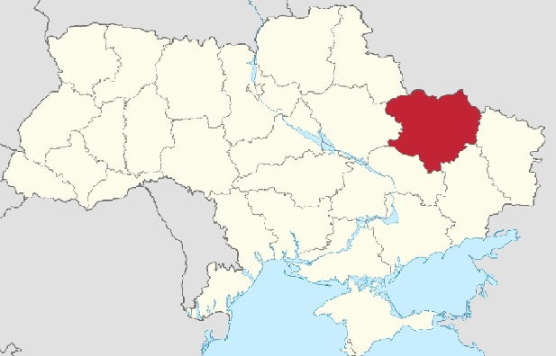

Украї́нці — слов'янський народ, основне й автохтонне населення України, найбільша етнічна спільнота на її території.[18][19] Як етнос сформувався на землях сучасної України та частин суміжних земель сучасних: Польщі, Білорусі, Молдови, Румунії, Угорщини, Словаччини та Російської Федерації. За межами України проживають в Канаді, США, Польщі, Бразилії, Росії, Казахстані, Німеччині, Чехії, Великій Британії та багатьох інших країнах.

Історія
Історико-етнографічні регіони
Особливості історичного розвитку різних територій України, їхні географічні розходження обумовили виникнення історико-етнографічних районів українців — Бойківщина, Бессарабія, Буджак, Буковина, Волинь, Галичина, Гуцульщина, Донщина, Закарпаття, Запоріжжя, Зелена Україна, Карпатська Україна, Кубань, Курщина, Лемківщина, Лівобережна Україна, Малиновий клин, Мармарощина, Надбужжя, Середня Наддніпрянщина (Київщина, Полтавщина), Наддністрянщина, Надпоріжжя, Надпруття, Надсяння, Надросся, Надчорномор'я, Підляшшя, Поділля, Подніпров'я, Покуття, Полісся, Посулля, Правобережна Україна, Приазов'я, Прибужжя, Придністров'я, Придунав'я, Прикарпаття, Пряшівщина, Сірий клин, Слобожанщина, Ставропольщина, Стародубщина, Терщина, Холмщина, Червона Русь, Чернігівщина.
Культура
Основна традиційна галузь сільського господарства українців — рільництво з перевагою трипілля (поряд з ним ще в XI столітті в Карпатах і на Поліссі зберігалося підсічно-вогневе й перелогове). Обробляли жито, пшеницю, ячмінь, просо, гречку, овес, коноплі, льон; з кінця XVII століття — кукурудзу, тютюн, з другої половини XVIII століття — соняшник, картоплю; з городніх культур — капусту, огірки, буряк, редьку, цибулю та ін., кавуни й гарбузи (у степових районах), з початку XIX століття — помідори та перець. Для українців здавна характерно присадибне садівництво (яблуні, груші, вишні, сливи, малина, смородина, аґрус, меншою мірою абрикоси, черешня, виноград).
Розселення
Заселений переважно етнічними українцями ареал Європи розташований в її центрально-східній частині, на південному заході Східноєвропейської рівнини, у Східних Карпатах і прилягає до Чорного й Азовського морів. Українська етнічна територія охоплює близько 600 тис. км² (без врахування відірваних від суцільної етнічної території українських етнічних анклавів) і простягається приблизно на 1400 км із заходу на схід широкою смугою переважно від 300 до 700 км з півночі на південь[33].
Особливістю української етнічної території серед величезних євразійських просторів усіх сучасних слов‘янських народів є те, що найімовірніше саме на ній сформувалася праслов‘янська етнічна спільнота, частина якої (та, що не мігрувала звідси) з часом розвинулася в сучасних українців. Ядро української етнічної території від початку формування українців до сьогодні було розташоване в межах сучасної державної (національної) української території[34].
Чисельність
Загальна чисельність перевищує 46 мільйонів осіб. З них 37 мільйонів мешкає в Україні.
Мова
Українці розмовляють українською мовою, що до середини XIX століття називалася «руською», «козацькою» або «малоросійською». Вона належить до слов'янської групи індоєвропейської мовної сім'ї. Ця мова має писемність на основі кирилиці. Розрізняють такі діалекти української мови: північний, південно-західний і південно-східний.
Частина українців Наддніпрянської України говорить російською або суржиком внаслідок зросійщення українських земель у XIX—XX століттях. Так само частина українців Галичини, Буковини і Закарпаття знає польську, румунську та угорську мови через політику полонізації, румунізації та мадяризації цих регіонів у першій половині XX століття.
Тваринництво
Українці розводили велику рогату худобу переважно сірої степової та іншої порід, овець, коней, свиней, домашнього птаха. Переважала вигонна, а в Карпатах сезонна відгінна форма випасу тварин. Бджільництво й рибальство грали в господарстві підсобну роль.
Український чумак — перевізник вантажів на великі відстані, особливо солі й риби на здорових возах мажах, запряжених волами. Значне місце в господарстві займали різноманітні промисли й ремесла — ткацтво, поташний, гутний (виробництво скла), гончарний, сукновальний, деревообробний, шкіряний та інші.
Житло
Традиційні сільські поселення — села, слободи, хутори вуличного, радіального, розкиданого та іншого планування. Житло дореволюційного селянства — хати (укр. хати), глинобитні або зрубні, побілені зсередини й зовні були двох-трикамерними (типу хата — покрову — хата або хата — покрову — комора), а в бідняцьких господарствах — однокамерними, з глинобитною підлогою, чотирискатної солом'яної, а також з очерету або дранки на даху. У Полісся та в ряді районів Східної Галичини житло залишалося аж до початку XX століття курним або напівкурним.
Основою житла є дубові підвалини, які лежать на кам'яному фундаменті. Відповідно до народних вірувань житло вхідними дверима спрямоване на південь, покуття — на схід, а задня частина хати, відповідно, на північ. Садиба має традиційну для української хати трикамерну будову. Сіни виконують роль прихожої кімнати та господарського вузла. Наступна кімната називається коморою. Це традиційно господарська частина українського житла. Всередині комора залишалася небіленою і використовувалась переважно для зберігання харчових запасів.
Одяг
Верхній одяг українців відрізнявся великою розмаїтістю. Жінки й чоловіки носили короткі й довгополі безрукавки, іноді вироблені з хутра. У лемків була чуганя — верхній одяг з наглухо зашитими рукавами, які служили кишенями. Свита — верхній сукняний одяг, звичайно коричневого або чорного кольору — змінювалася залежно від регіону і майнового положення її власника не тільки фасонами, але й покрієм. Вона могла мати каптур («ворок»). Жіноча свита була приталеною. Кунтуш і опанча, однотипний з каптаном одяг з домотканого полотна біло-сірого кольору, були більш ошатними різновидами свити. Козацький жупан із сукна, родич кавказького бешмета. Зимовим чоловічим і жіночим одягом служили шуби або кожухи, які іноді називали «зимогрії». Він шився із 7-9 овечих шкур. Носили його досить довго — 10-15 років, а потім покривали сукном і продовжували носити ще кілька років.
На негоду був розрахований кобеняк, що являв собою великий сукняний мішок із прорізом для очей і рота. У старовину кобеняк був найпоширенішим верхнім одягом. У суворі зими його надягали поверх кожуха.Характерна багата вишивка, аплікація і таке інше.
Кухня
Їжа дуже розрізнялася в різних верств населення. Основу харчування становили рослинна та борошняна їжа (борщ, галушки, різноманітні юшки), каші (особливо пшоняні та гречана); вареники, пампушки з часником, лемішка, локшина, кисіль та інше. Значне місце в їжі займала риба, у тому числі солона. М'ясна їжа селянству була доступна лише на свята. Найпопулярнішими були свинина й свиняче сало. З борошна з додаванням маку та меду випікали численні маківники, коржі, книші, бублики. Поширені були такі напої, як узвар, варенуха, сирівець, різноманітні наливки й горілка, у тому числі популярна горілка з перцем. Як обрядові страви найпоширеніші були каші — кутя та коливо з медом.
Суспільний устрій
У суспільному житті українського села до кінця 19 століття зберігалися пережитки патріархальних відносин, значне місце посідала сусідська громада — громада. Притаманні були багато традиційних гуртових форм праці (толока, супряга) і відпочинку (парубочі громади — об'єднання неодружених хлопців; вечорниці й досвітки, новорічні колядки й щедрівки та інше). Панівною формою родини українців була мала, з вираженою владою її глави — чоловіка та батька, хоча аж до початку 20 століття, особливо в Полісся й у Карпатах, зберігалися залишки великої патріархальної родини.
Символіка
Калина — символ життя, крові, вогню. Деякі дослідники пов'язують її назву із сонцем, жаром, паланням.
Вінок — символ життя, долі, життєвої сили; символ дівоцтва. Вінок є також символом довершеності.
Рушник — смуга полотна сама по собі має насичене символічне значення — дороги, долі, захисту. А коли ця смуга мала на собі виткані чи вишиті знаки-обереги — захисна сила її, посилювалась. Рушник використовується в багатьох обрядах, насамперед тих, що пов'язані зі шлюбом і проводами в потойбіччя.
Писанка — символ Сонця; життя, його безсмертя; любові і краси; весняного відродження; добра, щастя, радості.
Вишиванка — символ здоров'я, краси, щасливої долі, родової пам'яті, порядності, чесності, любові, святковості; оберіг.
Вишня — символ світового дерева, життя; символ України, рідної землі; матері; дівчини-нареченої.
Волосся — символ богині неба, землі; багатства; розвитку духовних сил; енергії, вогню, плодючості, здоров'я; символ скорботи, трауру; обстрижене волосся — символ покритки /стриги/, втраченого дівоцтва, цнотливості; «народження-смерті»; вічної пам'яті; оберіг. Волосся — багатозначний символ. Волосся на голові символізувало духовні сили людини, і водночас — ірраціональні космічні сили та біологічні інстинкти.
Національні музичні інструменти
Бандура— український традиційний струнний щипковий інструмент, можливо, походить від давньоруських гуслів. Має ковшеподібний корпус з грифом і 12 струн (іноді більше, до 30). На бандурі грають, перебираючи струни обома руками, тримаючи її на колінах вертикально. Найбільшого розповсюдження бандура досягла в епоху козацтва. Бандура як найвідоміший український народний інструмент стала одним із символів української культури.[56]
Гуслі — найстародавніший український щипковий музичний інструмент, що був дуже популярним у Київській Русі. У гуслях струни натягнуто на трикутний дерев'яний резонансний ящик. Звук на інструменті видобувають, тримаючи його на колінах горизонтально, защипуючи струни пальцем. З часів Київської Русі гуслі проіснували в побуті мешканців України ймовірно аж до XIX століття, оскільки ще Пантелеймон Куліш згадував, що бачив співця-гусляра.[56]
Кобза — старовинний інструмент, що на початку мав три струни, вузьку шийку і довгастий корпус. Згодом число струн збільшилося, гриф укоротився, корпус округлився, з'явилися приструнки і зникли лади («українця, що любить прикрашати свою музику найтоншими мелізмами, не задовольняла визначеність ладу», — писав дослідник Гнат Хоткевич). На поширеній у минулі століття в Україні народній картині «Козак Мамай» можна побачити цей інструмент. Має стрій, подібний до гітари (4-8 струн). На кобзі грають, притискаючи лівою рукою струни на грифі. Рігельман у своїх замітках XVIII століття писав, що в селі більше грають на кобзі, а в місті — на бандурі.
Басоля — український народний смичковий інструмент, що формою нагадує віолончель. Має чотири струни.
Колісна ліра — у її супроводі незрячі мандрівні співці-лірники співали псальми, також грали жартівливі, танцювальні мелодії на ярмарках. Прототипом такої ліри є грецький монохорд, що мав одну струну й одну клавішу, яка пересувалася вздовж струни. У зміненому вигляді інструмент у IX століття був поширений у Західній Європі. В Україні колись існували цілі школи лірників.
Торбан — струнний інструмент з грифом. Поширений серед української шляхти, називався ще «панська бандура». На торбані грав Іван Мазепа (тривалий час торбан з гербом гетьмана зберігався у Чернігівському музеї).
Коза (дуда) — інструмент на зразок волинки. Прототип сучасної гармоніки. Міх виготовляється зі шкури кози — білий і кудлатий. Має свисток і кілька дудок.
Трембіта — духовий інструмент з дерева смереки, що довжиною буває до трьох метрів. Інструмент гірняків-гуцулів. Трембітають на полонинах, та в час поховального ритуалу. Звуком трембіти сповіщають сумні вістки, а на полонинах передають необхідні сигнали на далеку відстань.
Цимбали — струнний ударний інструмент. Дерев'яна пласка скринька у формі трапеції або дерев'яна рама, на якій натягнуті струни. На цимбалах грають за допомогою паличок чи молоточків. Цимбали поширені також у Польщі, Угорщині, Румунії, Білорусі.
Релігія
Згідно з соціологічним дослідженням Центра Разумкова, станом на 2019 рік, близько 66 % українців вважають себе віруючими, близько 12 % вагаються між вірою та невір'ям, частка невіруючих 5,4 %, атеїстів 4 %, людей яким це байдуже 6,5 %. Ще 5,9 % не змогли визначитись.
У територіальному розподілі найвищий рівень віруючих людей на Заході України (81 %), найнижчий на Півдні та Сході (52 % та 53 %). Невіруючих та атеїстів найменше на Заході (2 %), найбільше на Сході (20 %).
Абсолютна більшість українців православні християни (64,9 %), також поширений католицизм (обох обрядів: римо-католицизм (1,6 %), греко-католицизм (9,5 %)) та протестантизм (1,8 %). Значна частина (8 %) відносить себе до християн без певної конфесії.
Абсолютна більшість українців православні християни (64,9 %), також поширений католицизм (обох обрядів: римо-католицизм (1,6 %), греко-католицизм (9,5 %)) та протестантизм (1,8 %). Значна частина (8 %) відносить себе до християн без певної конфесії.
Абсолютна більшість українців православні християни (64,9 %), також поширений католицизм (обох обрядів: римо-католицизм (1,6 %), греко-католицизм (9,5 %)) та протестантизм (1,8 %). Значна частина (8 %) відносить себе до християн без певної конфесії.